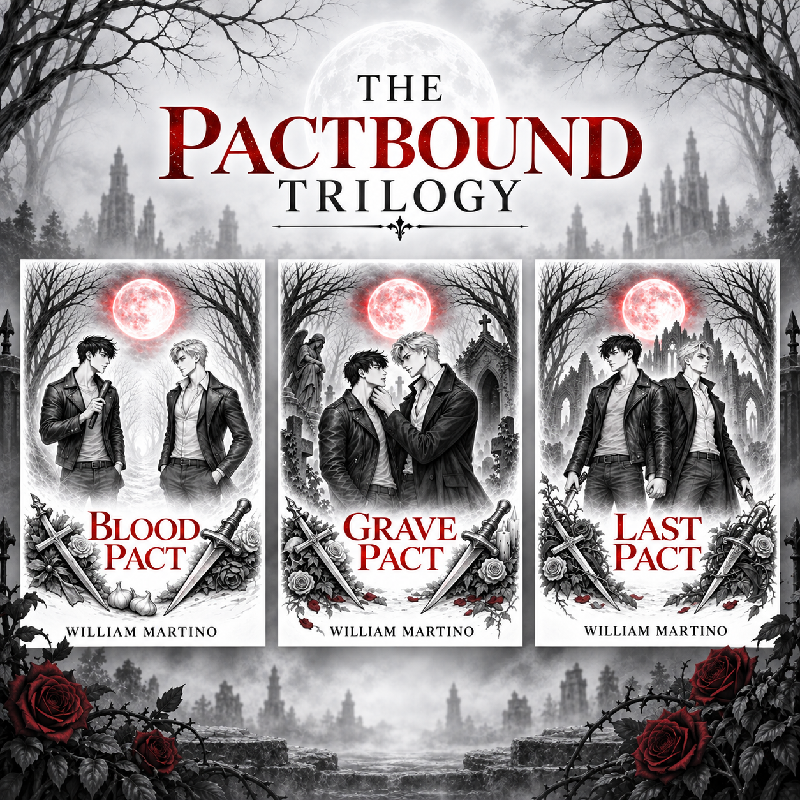

Blood Pact Is Almost Finished — The Pactbound Trilogy Is Only Beginning

I’ve been spending a lot of time lately in the dark, gothic world of Blood Pact, and I’m excited to finally be able to say that the novel is essentially finished. At this point, the manuscript is complete, and any remaining changes should be limited to last-minute edits that come out of feedback from my ARC readers. After spending so much time writing, rewriting, expanding, cutting, questioning myself, and then writing some more, reaching this point feels a little surreal.
Blood Pact has also grown into a much larger story than I originally imagined. The finished novel comes in at more than 600 pages, making it one of the biggest projects I’ve taken on as a writer. It is a gothic MM horror romance filled with darkness, intimacy, fear, obsession, and the kind of characters who have a habit of refusing to leave quietly when their chapter is supposed to be finished. Writing it has been an incredibly exciting experience, and watching the story take shape over hundreds of pages has made me even more attached to this world and the people living inside it.
Somewhere along the way, I also realized that I didn’t want every question raised in Blood Pact to be neatly answered before the final page. There is a mystery introduced during the story that becomes important enough to notice, but I made the deliberate decision not to resolve it in this book. Readers will get pieces of it, enough to know that something larger is happening, but the complete answer will have to wait. I wanted there to be something lingering beneath the story even after the immediate events of Blood Pact reach their conclusion.
And then, of course, I decided to make things worse.
I left a rather nice cliffhanger at the end.
Without giving anything away, I wanted the final pages to give readers that feeling of realizing the story they thought was ending has just opened another door. My hope is that when you finish Blood Pact, you’ll have gotten a complete, substantial story while also immediately wanting to know what happens next. Between that unresolved mystery and the cliffhanger waiting at the end, there are already threads pulling the story forward into what comes next.
That brings me to the biggest news: Blood Pact is no longer going to stand alone. It will be the first book in The Pactbound Trilogy, and this is much more than an idea I plan to get around to someday. The outlines for both Grave Pact and Last Pact are already complete, and the writing process for Grave Pact is well underway. I know where this story is going, I know where these characters are headed, and I know where the trilogy ultimately ends.
The trilogy follows an intentional progression through three different kinds of pacts:
Blood Pact — A pact imposed.
Grave Pact — A pact that refuses to die.
Last Pact — A pact freely chosen.
Those three ideas have become the backbone of the larger story. Blood Pact begins with something forced upon its characters and the consequences that follow. Grave Pact will carry those consequences forward into something that refuses to stay buried, forgotten, or finished. And ultimately, Last Pact will bring the trilogy to the question at the heart of it all: what happens when a pact is no longer something forced upon you, but something you choose for yourself?
I also want readers to know that I don’t intend for there to be an enormous wait between books. My current goal is to have the entire Pactbound Trilogy completed before the end of 2027. If everything continues moving the way it is now, I hope to have Blood Pact released as early as December 2026. Grave Pact is already far enough along that I expect it to be ready sometime within the first half of 2027, with Last Pact following and bringing the trilogy to its conclusion before the end of that year.
Of course, publishing schedules can shift, especially when edits, ARC feedback, formatting, and all the other pieces that go into finishing a book enter the picture. I would rather take the extra time to make each book the best version of itself than rush something out simply to meet a date. But the important part is that this trilogy is already moving forward. The second and third books are planned, the next one is being written, and the full story has a destination.
For now, my attention is on those final rounds of ARC feedback and making Blood Pact as strong as I can before it reaches readers. Having a manuscript of more than 600 pages sitting in front of me and knowing that the story is nearly ready to leave my hands is both exciting and a little intimidating. More than anything, though, I’m looking forward to finally sharing it.
Blood Pact may be almost finished.
The pact itself is only beginning.